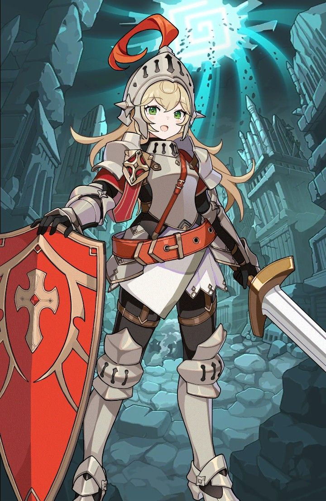

Information

Prologue
The Knight first appeared in the prologue, where they are seen training alongside other Guardians, with Knight Captain Eva overseeing the training. She then commands the training Guardians to stand at ease, before introducing the Knight to the other Guardians, as a new recruit who have passed through the entrance exams. Congratulating the Knight, Eva was suddenly interrupted by another Guardian, who came running and reported of an unknown object approaching from the sky. The object, revealing itself in front of the Guardian's Keep, immediately shoots a number of fireballs towards the place, causing Eva, the Knight and several Guardians to be thrown off the Keep. The Knight then was saved by an unknown person, who ran away right after saving them.
The Knight then fights off a number of strange creatures, known as the Invaders, before saving and reuniting with two Guardians, Bob and Linda. The two thanks the Knight for saving them, before giving the Knight a shield and telling them about Eva's location. Reunited with Eva, the two then ran towards the Kanterbury Throne, where the Queen and Little Princess is seen evacuating the last of the inhabitants of Kanterbury Kingdom. Arriving inside, the Knight and Eva was greeted by the Little Princess, before the Dark Magician suddenly appeared and attacked the Queen, Knight and Eva. The three of them immediately came back to their senses after the Little Princess used her powers to temporarily seal the Dark Magician. The Queen later tells the Knight and Eva that they must leave, as the Little Princess's chains can't hold the Magician for long. Escaping through a teleportation circle, the four head to the Kanterbury Ruins, before being immediately chased down by the Magician. They immediately get attacked by the Magician, causing the Knight and the Little Princess to fall into the Kanterbury Forest.
Stats
